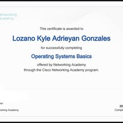
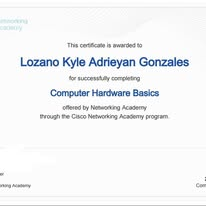
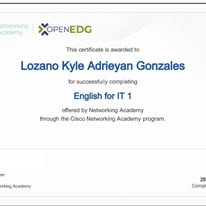
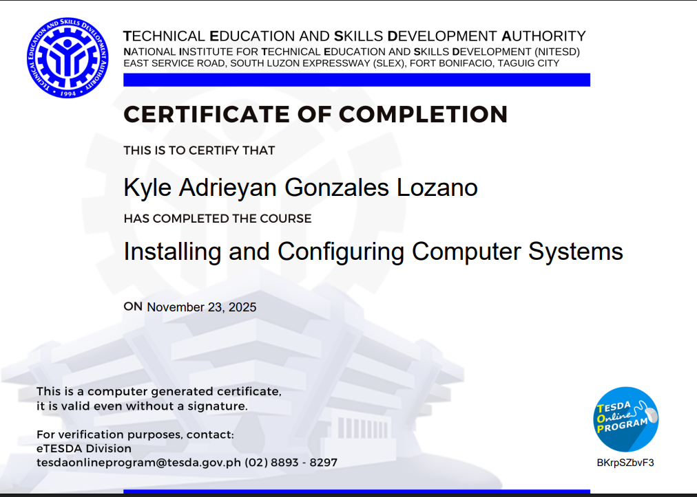

Aspiring Front-End Web Developer
BS Information Technology • Our Lady of the Sacred Heart College of Guimba, Inc.
▸ Get to know me
Hi! I am Kyle Adrieyan G. Lozano, a 19-year-old BS Information Technology student at Our Lady of the Sacred Heart College of Guimba, Inc. (OLSHCG) in Guimba, Nueva Ecija. I have a genuine passion for technology and how it can be used to create meaningful change in the world. Outside of academics, I enjoy fishing, biking, and going on road trips — activities that keep me grounded and fuel my creativity. My goal is to become a skilled front-end web developer who builds solutions that make a real difference in people’s everyday lives.
▸ Who I am
▸ What I know
▸ My why
I chose Information Technology because I believe that even through technology, we can help save the world. My mind is always full of ideas — especially when I see problems in society, economics, and the everyday lives of people around me. IT gives me a platform to turn those ideas into real solutions. I am inspired by the thought that a single well-built application, a well-designed website, or a clever algorithm can change how communities work, how people access resources, and how we address the challenges of our generation. For me, coding is not just a skill — it is a responsibility and a tool for positive change.
▸ Achievements



